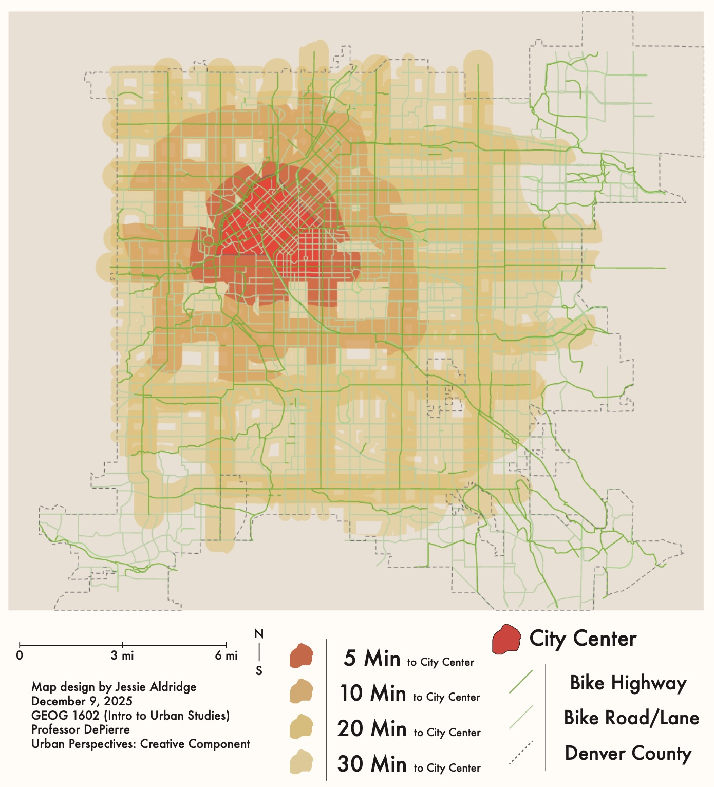

A Path Forward
Denver's Bike Infrastructure: Three Decades of Slow Progress
The morning of January 14, 2025 brought tragic news to Denver’s cycling community, as another cyclist had been killed in a hit-and-run incident at 14th and Yates Street. Just weeks later, a second cyclist lost their life in northwest Denver under eerily similar circumstances. These deaths occurred more than three decades after Denver adopted its first comprehensive Bicycle Master Plan in 1993, and seven years into the city’s Vision Zero initiative promising to eliminate all traffic deaths by 2030. While Denver has made tangible progress since the first major infrastructure development in ‘93, a gap has remained between ambitious master plans and implementation in reality, such as the incomplete 1 mile grid system, has had limited safety improvements, and as a result, adoption of cycling as a form of commuting. This essay will trace Denver’s bicycle planning evolution from 1993 to the present, demonstrating both achievements and shortcomings.
The 1993 Vision
The ‘93 master plan established the foundation for the city’s bicycle infrastructure development that would change the way the city moved around. The plan’s core goal was ambitious while having specific goals, headlined by the 1 mile grid of bike routes that would ensure every resident would be within half a mile of safe cycling infrastructure that would connect them with the rest of the city. The infrastructure was supported by promoting the idea of the “Four E’s,” Engineering, Education, Encouragement, and Enforcement, with planners at the time realizing infrastructure alone would not be enough to change the behavior of its citizens. It set specific targets including increasing cycling mode share from 1% to 3% by the year 2000. At the time of adoption, Denver had around 180 miles of existing bike infrastructure. The plan emphasized the creation and connection of on-street routes and lanes as well as off-street trails to function as an interconnected system. The 2001 master plan update maintained the 1993 vision while updating specific projects, demonstrating sustained commitment to bicycle infrastructure development. The launch of Vision Zero in 2018 represented another evolution in Denver’s safety priorities. This initiative set out with an incredibly ambitious goal of eliminating all traffic deaths within Denver by 2030. Since the first announcement of Vision Zero, Denver has passed more initiatives to try and hit the goal of zero deaths, however there is still much to be done. The continued commitment to passing legislation shows that the city government is working toward the goal, while going at their own pace. This needs to be sped up in order to get the system in place and working effectively to ensure the infrastructure is connecting and being used.
Growth Without Completion
Denver has achieved notable infrastructure growth in the past 3 decades, expanding the bike network from 180 miles in ‘93 to roughly 850 miles in 2025. In 2023 alone, the city completed 137 miles of bicycle infrastructure, exceeding its goal of 125 miles. However, recent research reveals significant challenges with deployment. Studies describe “one off bikeways to nowhere” and “significant gaps” within the network. Capitol Hill, Denver’s densest neighborhood, has minimal north-south routes, limiting usefulness for residents, and even today in 2025, the Hale neighborhood has no bike lanes at all. These examples reveal an uncomfortable truth, which is that simply just building more miles of bike infrastructure does not automatically equal expanding connections spread evenly over Denver, and the current system does not look anything like the grid envisioned in the ‘93 plan. The plan had safe bicycle routes spaced out by 1 mile so each resident of Denver would be close to a connection to the wider grid of the bicycle network. Additionally, many of these 850 miles consist of “sharrows,” markings that indicate the lane is shared between cars and cyclists. Multiple research studies have shown that this type of “infra-paint-ture” is significantly less effective at ensuring safety of riders, which in turn discourages potential cyclists from trying it out. The result is a whole lot of new mileage, but that does not do much to improve the experience for the people utilizing this micromobility network.
Mixed Results
Vision Zero launched with the ambitious goal of eliminating all traffic deaths by 2030, reflecting a bold commitment to cyclist safety. However, reality presents a more complicated picture. Between 2020 and April ‘25, Denver experienced 3,974 bicycle accidents, averaging 745 per year. In 2024 alone, 178 crashes generated police reports. Most alarmingly, 2025 has seen over 10 deaths from automobile and cyclist crashes. The data on the state of safety of cyclists makes it seem like Denver is progressing backward on its goals for Vision Zero, instead of progressing forward. The 1993 master plan identified that most accidents occur at intersections and on arterial roads, most often in some of the most glaring holes in the grid system, with many recommended improvements still not completed to this day. This suggests that the original planners correctly identified the problem, a problem where cyclists are the most vulnerable when they must interact with high-speed and high-volume automobile traffic. The solution proposed in the ‘93 plan was the previously mentioned grid, providing low-stress, safe alternatives to riding along the unsafe arterials. The fact that this solution was never implemented fully helps explain why safety numbers remain so terrible. While many factors impact crash rates beyond just infrastructure, the data shows that safety improvements have not matched the scale of infrastructure investment. In that original plan from the nineties, there was a clear goal. Increase the cycling mode share from 1% to 3% by 2000. By 2010, Denver had reached a peak of 2.2%, where it has remained at just over 2 percent ever since. However, a study conducted in 2017 showed that in downtown, cycling made up 8.3 percent of all commutes. This disparity shows a theme, as the higher percentage in downtown suggests that well-connected infrastructure has a real, tangible effect on the share of people choosing to not take a car. Downtown is blessed as it has a dense network of bike lanes, lower speed limits for cars, and different route options, all conditions that the original grid plan in 1993 aimed at creating city-wide. The challenge now lies in replicating the success of downtown throughout Denver as a whole, still with the original goal in mind of reaching 3% mode share.
Will this time be Different?
National research demonstrates that protected, connected bicycle networks reduce cyclist injuries by 30-40%. The key words, however, are ‘protected’ and ‘connected,’ both elements that must be present for maximum safety benefits. Denver’s own success downtown demonstrates this principle, one that where infrastructure is dense and connected, the usage of the network and the safety of the users increase. The gap between the theoretical and realistic networks is massive, with real consequences in the realms of safety, equitability, and environmentality. In 2024, Denver proposed another 230 miles of infrastructure expansion to the bicycle network, demonstrating the continued commitment to building out the system. However, examining current plans raises concerns about whether the focus remains on accumulating total mileage rather than completing essential connections. Recent planning documents reference a “core network” concept, which could be revisiting the grid idea present in the 1993 plan but updated to modern circumstances. The question remains, will this latest planning cycle produce substantially different results, or will Denver continue the pattern of building miles without completing the comprehensive, connected system that research and the city’s own experience show is necessary for improvement?
Conclusion
Denver has achieved substantial infrastructure growth over 32 years, expanding from 180 to 850 miles, and has demonstrated sustained planning commitment through multiple master plans and the initiative of Vision Zero. Meanwhile, safety and usage goals from 1993 remain largely unmet, with the main challenge being that the 1 mile grid concept was never fully explored. The result has been a fragmented network with “bikeways to nowhere” rather than the comprehensive system originally planned. The recent cyclist deaths in early 2025 underscore continued urgency. Achieving the Vision Zero 2030 goal requires addressing fundamental connectivity gaps rather than simply building more miles in isolation. The grid concept from ‘93 remains relevant to this day because it focused on connecting the network up in ways that benefited all users. A truly connected system throughout Denver could finally deliver on the safety, climate, and livability goals that have guided the city’s blossoming into a global city. The question is whether Denver will learn from the previous three decades, or continue the pattern that has not produced the results we are striving toward.
Bibliography
Bike Commute Share Increases in Denver, State. Front Range Cycle, November 30, 2017. Link.
"Biking in Denver." Denver.org. Link.
City and County of Denver. Denver Bicycle Master Plan. Denver: Department of Public Works, 1993.
City and County of Denver. Denver Bicycle Master Plan. Denver: Department of Public Works, 2001. Link.
City and County of Denver. "Vision Zero." Denver.gov. Link.
"Denver Bicycle Accident Statistics." Colorado Injury Law. Link.
"Denver Bike Lanes 2024: City Proposes Biggest Expansion Ever." Denverite, August 19, 2024. Link.
"Denver Bikeway Map." Denver Department of Transportation and Infrastructure. Link.
"Denver on Track to Meet 125-Mile Bike Lane Goal by End of Year." Colorado Public Radio, August 7, 2023. Link.
"Denver Wants to End Traffic-Related Deaths by 2030. Here's What That Will Take." Denver Post, October 6, 2017. Link.
League of American Bicyclists. "Where We Ride: Bicycle Commuting Data." BikeLeague.org. Link.
Lusk, Anne C., Patrick G. Furth, Patrick Morency, Luis F. Miranda-Moreno, Walter C. Willett, and Jack T. Dennerlein. "Risk of Injury for Bicycling on Cycle Tracks versus in the Street." Transportation Research Record: Journal of the Transportation Research Board 2520 (2011): 126-135. Link.
"Police Seek Leads on Hit-and-Run Crash That Killed Cyclist in NW Denver." Denver7, February 5, 2025. Link.
Schelly, Jeremy. "Hit-and-Run Crash Kills Bicyclist in Denver." 9News, January 14, 2025. Link.